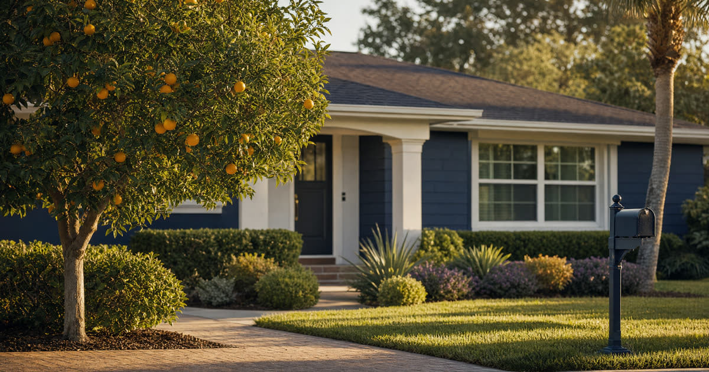

Ruth's Situation, In Brief
Ruth is 79, widowed, and lives in a paid-off home in Port Orange. She has one bank account with beneficiaries already named, and two adult children who get along well. I'll use her story throughout this article to walk through the decision, though Ruth is a composite drawn from patterns I see often in my practice, not an actual client.
A quick refresher before we get into Ruth's specific question: a Florida lady bird deed lets an owner keep full control of the property for life, including the right to sell it, mortgage it, or change their mind entirely, and it passes the home to named beneficiaries at death without probate. That much is settled. The harder question, the one Ruth's family actually needs answered, is whether that simple tool is enough, or whether a living trust would serve her better.
Have this exact situation? Talk it through with a Florida attorney — the 20-minute consultation is free.
Book Free Consult or call (888) 388-8445The Four Questions That Actually Decide This
I don't start with the tools. I start with the facts, because the facts tell you which tool fits. For any Florida homeowner in Ruth's position, four questions do almost all the work.
- What else do you own? A lady bird deed only moves the one piece of real estate it's attached to. If Ruth's bank account already has beneficiaries named, and the house is the only other real asset, there may be nothing left for a trust to do. A trust earns its cost when it's gathering up multiple accounts, other property, or out-of-state real estate under one roof.
- Who manages things if you become incapacitated before you die? This is the one area where the two tools genuinely diverge. A lady bird deed has no incapacity mechanism built in at all. It does nothing while the owner is alive except sit recorded in the county records. A living trust, by contrast, names a successor trustee who can step in and manage the property, pay the insurance and taxes, and act on the owner's behalf the moment the owner can no longer do so, without a guardianship proceeding.
- How do the kids need to take it? When beneficiaries get along and are content to inherit the home outright, in equal shares, and figure out among themselves whether to sell or keep it, a deed works cleanly. When a family wants staged distributions, unequal shares, protection for a beneficiary with creditors, or terms that hold a young or vulnerable heir's inheritance in further trust, only a living trust can build that in.
- What can you afford, and what will you maintain? Cost and complexity aren't just upfront numbers. A trust needs to be funded, meaning the house and other assets actually get retitled into it, and it benefits from periodic review. A lady bird deed is a one-time recorded document with essentially no ongoing maintenance.
Side by Side: Deed vs. Trust for One House
| Feature | Lady Bird Deed | Living Trust |
|---|---|---|
| Avoids probate for the house | Yes | Yes |
| Covers other assets (accounts, other property) | No, deed only | Yes, if properly funded |
| Owner keeps full control, can sell or revoke | Yes | Yes |
| Names someone to manage the house during incapacity | No | Yes, successor trustee |
| Can stage or condition how beneficiaries inherit | No, passes outright | Yes |
| Upfront cost | Lower | Higher, and more moving parts |
| Ongoing upkeep | Minimal | Requires funding and occasional review |
Truestead prepares Florida lady bird deeds starting at $199 for a self-guided deed, or $399 for an attorney-prepared deed that includes recording. That difference in cost only matters, though, if the deed is actually the right tool for the family's facts.
Where a Lady Bird Deed Falls Short, Even for One House
A deed distributes the house outright at death and nothing more. It offers no help if Ruth were to become incapacitated next year and someone needed authority to manage or sell the home on her behalf, no protection if a beneficiary has creditors or is going through a divorce at the time of inheritance, and no way to hold a share back for a grandchild or a beneficiary who isn't ready to manage money.
There's also a practical wrinkle worth knowing about. When a home passes to two or more beneficiaries by lady bird deed, they inherit as co-owners on the same day, with no built-in mechanism to decide who keeps it, who buys the other out, or how a sale gets handled if they disagree. Most families sort this out fine on their own. But when they can't, Florida law allows any co-owner to force a partition action, a court proceeding that can result in a court-ordered sale of the home. It is avoidable with a simple conversation in advance, but it's a real risk worth naming.
Using Both Together
Some Florida families end up using a lady bird deed and a living trust in tandem, not as competitors but as a team. A common pattern: the trust holds and directs everything else (the bank accounts, investments, personal property, and instructions for incapacity), while the house is deeded either directly to the named individual beneficiaries by lady bird deed, or to the trust itself as the named beneficiary on the deed, so the house folds into the trust's terms at death. This second version is especially useful when a family wants the flexibility of a lady bird deed's simple, low-cost mechanics during the owner's lifetime, combined with a trust's ability to stage distributions or manage the house for a beneficiary who isn't ready to inherit outright.
For Ruth, this combination approach isn't necessary. Her estate is small, her only other asset already has a beneficiary designation, her children get along, and she has no indication of near-term incapacity that would require someone else to step in and manage the property. A lady bird deed alone accomplishes what she needs: it keeps her in full control of her home for as long as she wants it, and it passes the house to her two children in equal shares the moment she dies, without a probate case, without extra cost, and without a trust to fund and maintain.
Frequently Asked Questions
The Truestead Takeaway
For a Florida homeowner like Ruth, with one paid-off house, a bank account that already names beneficiaries, and two children who get along, a lady bird deed is usually enough to move the home outside of probate without the cost or upkeep of a trust. The calculus changes if there are more assets to coordinate, a real concern about who manages the house during incapacity, or a desire to stage how the kids inherit. Every family's facts are different, so the sensible next step is to walk through those four questions with a Florida attorney and confirm which tool actually fits your situation.
Have a child turning 18? Get the free 18 & Protected packet — the legal documents every Florida 18-year-old needs.
Get the Free PacketGet Your Florida Lady Bird Deed
Truestead prepares Florida Lady Bird (enhanced life estate) deeds: $199 self-guided from your answers, or $399 attorney-prepared and recorded for you, with the homestead and documentary-stamp guardrails the form sites skip.
Start Your Lady Bird Deed →This article is for general informational purposes only and does not constitute legal advice, nor does reading it create an attorney-client relationship. Florida estate, elder, probate, and real estate law are fact-specific and change over time. Consult a licensed Florida attorney about your individual circumstances. Arthur Simpson, Esq. is licensed to practice law in the State of Florida. Attorney advertising.
Talk to a Florida Attorney — Free 20-Minute Consultation
Pick a time below. No obligation, no pressure — just answers.